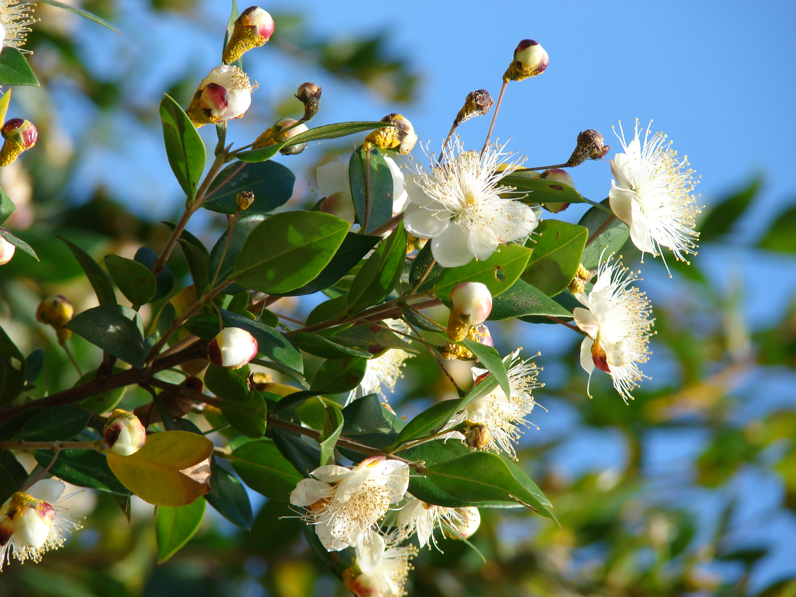
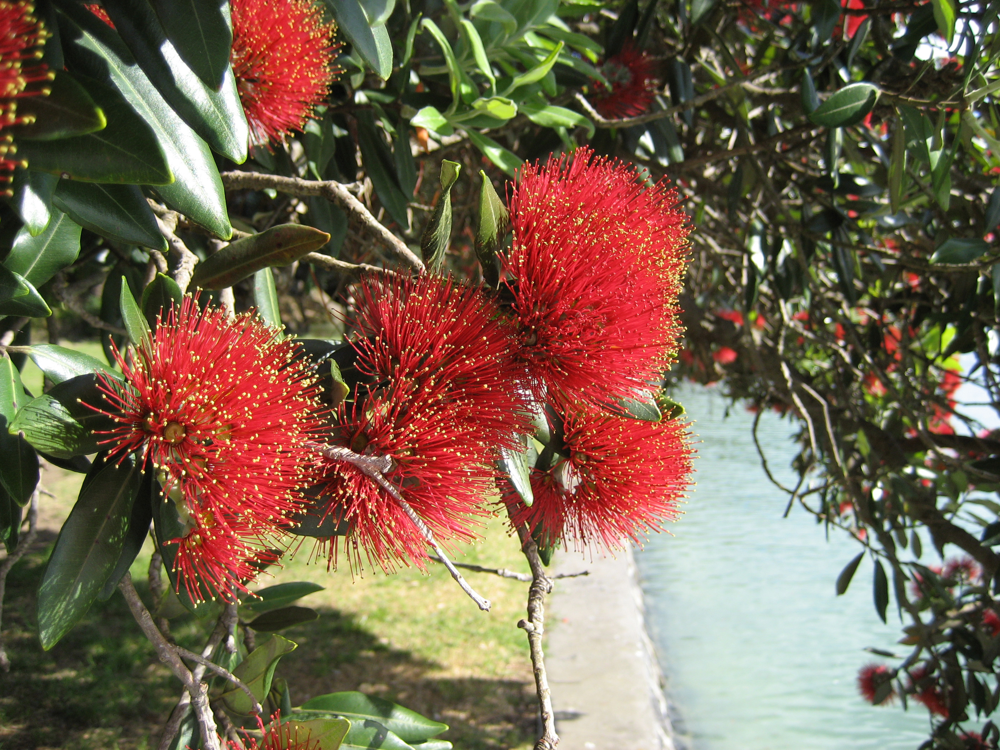
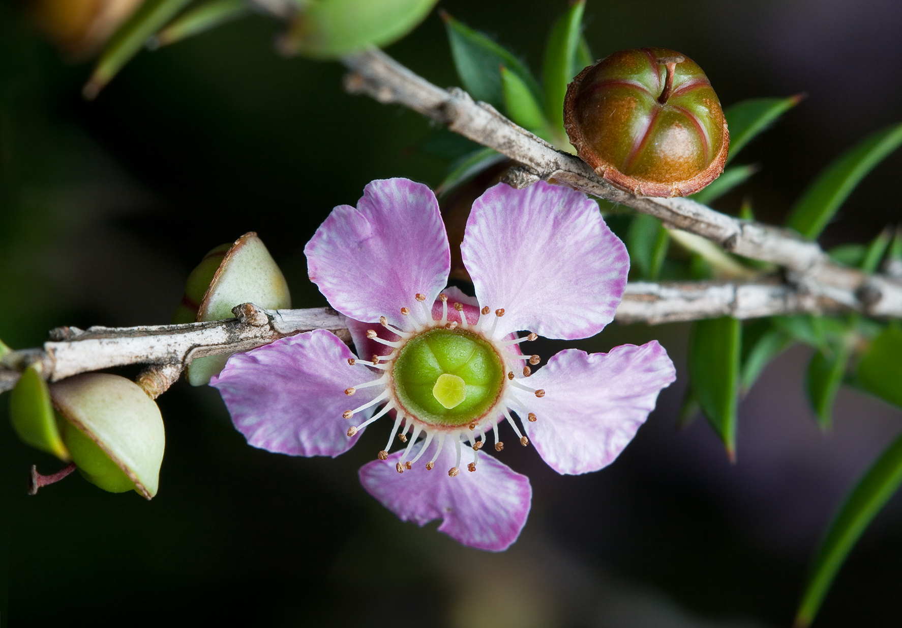
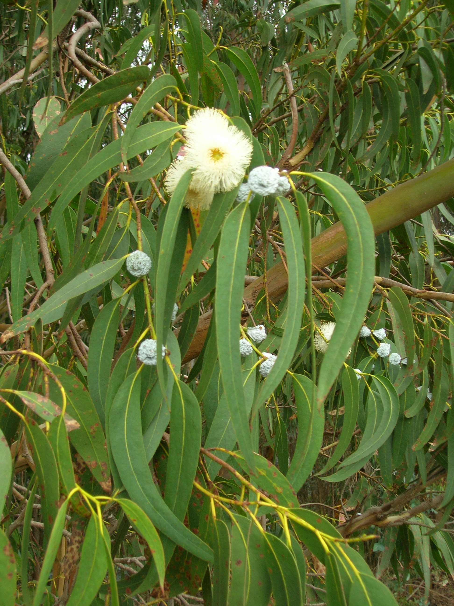

Myrtaceae
myrtle family
|  Myrtus communis (common myrtle) from Wikimedia Commons by Forest & Kim Starr, CC BY 3.0 |
 Feijoa sellowiana (pineapple guava) from Wikimedia Commons by C T Johansson - Own work, CC BY-SA 3.0 |
|  Metrosideros excelsa (pōhutukawa) from Wikimedia Commons by Kahuroa - Own work, Public Domain |
 Leptospermum squarrosum (pink tea tree) from Wikimedia Commons by JJ Harrison - Own work, CC BY-SA 3.0 |
{kind=link}
{kind=link}
{kind=link}
botanical characteristics
"Myrtaceae", Wikipedia
- growth form
- all species are woody
- stems/leaves
- leaves are evergreen, alternate to mostly opposite, simple, and usually entire
- flowers
- flowers have a base number of five petals, though in several genera, the petals are minute or absent
- flower parts come in multiples of 4 or 5
- reproductive structures
- stamens are usually very conspicuous, brightly coloured, and numerous
distribution
"Myrtaceae", Wikipedia
- recent estimates suggest the Myrtaceae include about 5950 species in about 132 genera
- wide distribution in tropical and warm-temperate regions of the world, and is common in many of the world's biodiversity hotspots
- genera with capsular fruits are absent from the Americas (apart from Metrosideros in Chile and Argentina)
- genera with fleshy fruits have their greatest concentrations in eastern Australia and Malesia (the Australasian realm) and the neotropics
ecological roles
"Myrtaceae", Wikipedia
- Myrtaceae is foraged by many stingless bees, especially by species such as Melipona bicolor which gather pollen from this plant family
- some Australian species such as Tetragonula hockingsi and T. carbonaria are also known to collect resin from the mature seed pods of Corymbia torelliana, resulting in mellitochory as the seeds get stuck onto the corbiculae of the bees and sometimes are successfully disposed of by colony members that remove them
- weevils in the tribe Cryptoplini mostly use Myrtaceae as hosts; their larvae can develop in flower and fruit buds, or in galls (often galls already formed by other insects)
common pharmacological constituents
"Angiosperm families - Myrtaceae Juss.", DELTA
- sugars transported as sucrose (in Syzygium), or as oligosaccharides + sucrose (mostly), or as sugar alcohols + oligosaccharides + sucrose (occasionally); inulin recorded (Eucalyptus); cyanogenic, or not cyanogenic (usually); cynogenic constituents phenylalanine-derived; alkaloids present (rarely), or absent; iridoids not detected; saponins/sapogenins present, or absent (mostly); proanthocyanidins present; cyanidin and delphinidin (usually), or cyanidin; flavonols present; kaempferol, or kaempferol and quercetin, or quercetin and myricetin, or kaempferol, quercetin, and myricetin; ellagic acid present (9 species, 7 genera), or absent (4 species, 4 genera); ursolic acid present; aluminium accumulation not found
"Myrtaceae", Wikipedia
- all species contain essential oils
patterns in medicinal actions
- reminiscent of Lauraceae in that they are strongly aromatic, but tending more towards lifting/transporting than grounding
- analgesic, antiseptic, antifungal, insect repellent
- cleansing action on the respiratory sytem, stimulant action on the cardiovascular system
traditional/cultural uses
"Clove", Wikipedia | "Allspice", Wikipedia | "Myrtus communis", Wikipedia | "Eucalyptus", Wikipedia | "Guava", Wikipedia | "Leptospermum", Wikipedia | "Melaleuca", Wikipedia
- important spices from this family include clove (Syzygium aromaticum) and allspice (Pimenta dioica); the berries of the common myrtle (Myrtus communis) has been used as a substitute for pepper
- eucaplytus (Eucalyptus) and tea tree (Leptospermum) prized for their essential oils
- guava (Psidium) is widely cultivated in tropical and subtropical climates
- mānuka honey is made from the tea tree Leptospermum scoparium
- eucalyptus is one of the most important trees for the paper industry, as well as for ornamental value, timber, and firewood
- bark from Melaleuca trees was used by Aboriginal peoples to make rafts, roofing for shelter, bandages, and for food preparation
warnings
- internal use of aromatic essential oils can be extremely irritating and toxic and is not recommended
extra information
prominent genera
- Corymbia (bloodwoods)
- Eucalyptus (eucalypts)
- Feijoa (pineapple guava)
- Leptospermum (tea trees)
- Melaleuca (paperbarks, honey-myrtles, bottlebrushes)
- Metrosideros (incl. pōhutukawa)
- Myrtus (myrtles)
- Pimenta (incl. allspice)
- Psidium (incl. guava)
- Syzygium (incl. clove)
plant highlights
see list of materia medica entries here
Eucalyptus globulus
|  from Wikimedia Commons by Forest & Kim Starr, CC BY 3.0 |
common names: blue gum, eucalyptus en español: eucalipto blanco/común/azul |
{kind=link}
description
"Eucalyptus globulus", Wikipedia
- typically a tree but may sometimes only be a stunted shrub
- bark is usually smooth, white to cream-coloured but there are sometimes slabs of persistent, unshed bark at the base
- leaves are arranged alternately, glossy to dark green on both sides, lance-shaped or curved
- flower buds are arranged singly or in groups of three or seven in leaf axils, sometimes sessile or on a short thick peduncle
- flowers are always white
- fruit is a woody conical or hemispherical capsule with the valves close to rim level
distribution
"Eucalyptus globulus", Wikipedia
- grows in forests in New South Wales, Victoria and Tazmania, including some of the Bass Strait Islands
- there are naturalized non-native occurrences in Spain and Portugal, and other parts of southern Europe, southern Africa, New Zealand, western United States (California), Hawaii, and Macaronesia
medicinal/magical uses
The Modern Herbal Dispensatory, p. 229
- antibacterial, antimicrobial, expectorant, warming, drying
- useful expectorant for damp coughs, lingering bronchitis, damp asthma, and some cases of COPD
- oil can be diffused and inhaled or applied topically as an analgesic in arthritis
The New Age Herbalist, p. 88
- strongly antiseptic
- used externally in inhalations for colds and excess phlegm and diluted as a chest rub for coughs
- eradicates fleas and lice
preparation methods
The Modern Herbal Dispensatory, p. 229
- infusion
- tincture
warnings
The Modern Herbal Dispensatory, p. 229
- safe internally for adults and in small doses for children
- use essential oil with caution in children under 4 years old due to risk of neurotoxicity
sources
"Allspice" on Wikipedia. Retrieved 27 August 2025.
"Angiosperm families - Myrtaceae Juss." on DELTA - DEscription Language for TAxonomy. Retrieved 27 August 2025.
"Clove" on Wikipedia. Retrieved 27 August 2025.
Easely, Thomas and Steven Horne. The Modern Herbal Dispensatory (2016)
Elpel, Thomas J. Botany in a Day: The Patterns Method of Plant Identification (2021)
"Eucalyptus" on Wikipedia. Retrieved 27 August 2025.
"Eucalyptus globulus" on Wikipedia. Retrieved 27 August 2025.
Goldberg Blackthorn, Samantha. Ace of Cups Herbal Medicine and Botanical Magic Herbal School (2024)
"Guava" on Wikipedia. Retrieved 27 August 2025.
"Leptospermum" on Wikipedia. Retrieved 27 August 2025.
Mabey, Richard et al. The New Age Herbalist (1988)
"Melaleuca" on Wikipedia. Retrieved 27 August 2025.
"Myrtaceae" on Wikipedia. Retrieved 27 August 2025.
"Myrtus communis" on Wikipedia. Retrieved 27 August 2025.